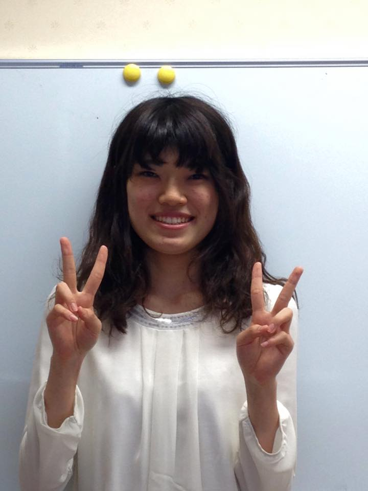
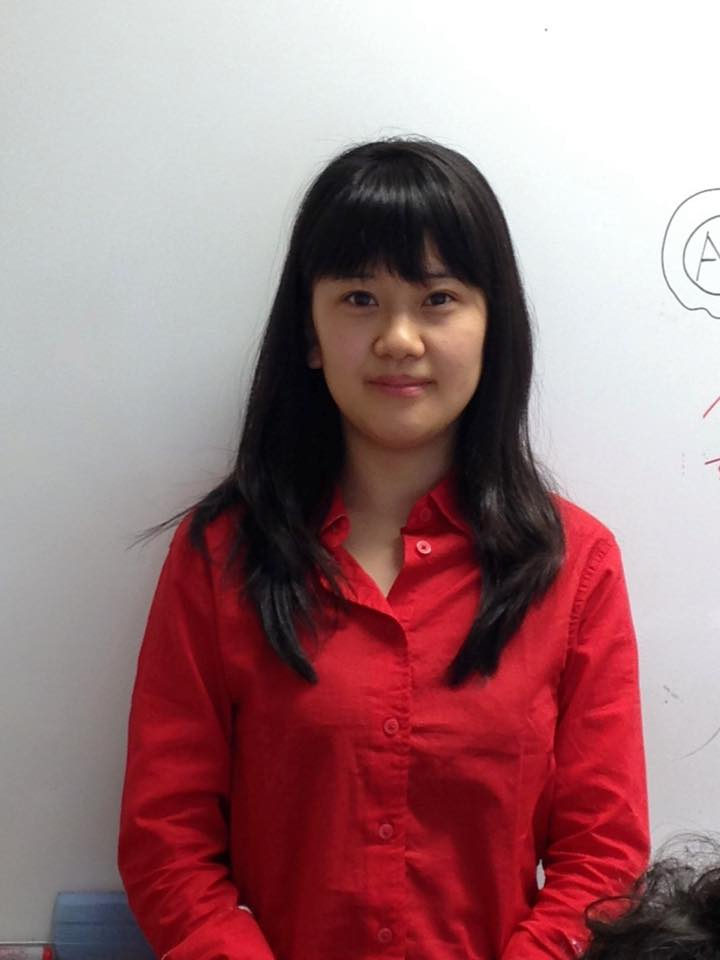
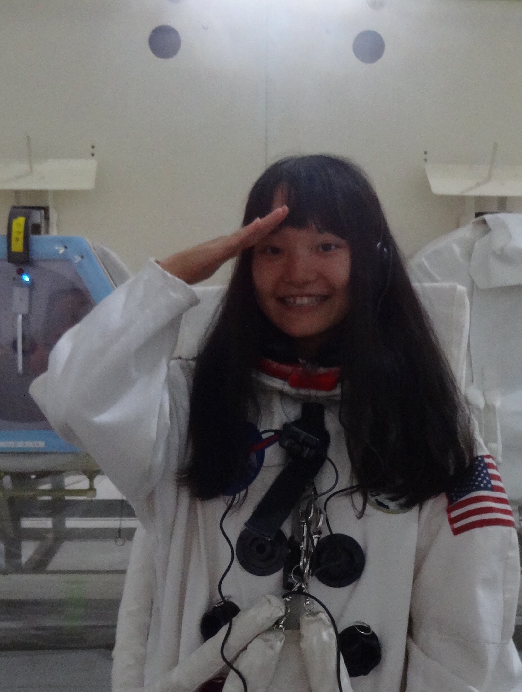

Biology
Biology
Biology
Material Science

Biology
Biology


Biology
Biology
Physics

Akiko Iida
Biology
Arisa Nakjima
Biology
Gina Miku Oba Biology
Haruhi KanekoMaterial Science

Kana FujimotoBiology
Kaori NaraBiology
Luyiyun LiangBiology
Mai ItagakiBiology

Rina OndaPhysics
Supervisor
 Dr. Nathanael Aubert-Kato
SPONSERS
=======
Dr. Nathanael Aubert-Kato
SPONSERS
=======
| |
|
| Akiko Iida Biology |
Arisa Nakjima Biology |
| Gina Miku Oba Biology |
Haruhi Kaneko Material Science |
| |
|
| Kana Fujimoto Biology |
Kaori Nara Biology |
| |
|
| Luyiyun Liang Biology |
Mai Itagaki Biology |
| Rina Onda Physics |
| |
| Dr. Nathanael Aubert-Kato |